МІНІСТЕРСТВО ОСВІТИ І НАУКИ УКРАЇНИ
НАЦІОНАЛЬНИЙ УНІВЕРСИТЕТ «ЛЬВІВСЬКА ПОЛІТЕХНІКА»
Інститут комп’ютерних технологій, автоматики та метрології
кафедра “Електронних обчислювальних машин”
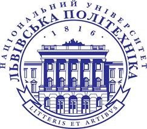
Звіт
з лабораторної роботи №4
з дисципліни «Автоматизація проєктування комп'ютерних систем»
на тему: «3D-моделювання та підготовка до 3D-друку об’єкта»
Варіант: група КІ-402, цифра «2»
Виконав:
студент групи КІ-402
Процак М.С.
Перевірив:
Шпіцер А.С.
Львів – 2026
Мета роботи: набути практичних навичок 3D-моделювання з використанням різних САПР та освоїти процес підготовки моделі до адитивного виробництва (3D-друку) за допомогою слайсера.
Група КІ-402 → базова цифра «2». На цифрі розміщено прізвище, ім'я та по батькові студента (Процак Максим Степанович) трьома типами контурів.
| Елемент | Розмір / розміщення | Тип контуру | AutoCAD | Fusion 360 |
|---|---|---|---|---|
| Цифра «2» | 90 × 130 мм, ширина сегмента 24 мм, товщина 8 мм | базове тіло | PLINE → REGION → EXTRUDE | Sketch → Extrude (New Body) |
| «Процак» | верхня смуга, висота шрифту 12 мм | опуклий, +2 мм | EXTRUDE + UNION | Extrude Join |
| «Максим» | середня смуга, 12 мм | увігнутий, −2 мм | EXTRUDE + SUBTRACT | Extrude Cut 2 мм |
| «Степанович» | нижня смуга, 10 мм | наскрізний | EXTRUDE 10 мм + SUBTRACT | Extrude Cut 10 мм (> 8 мм) |
Цифру виконано в «семисегментному» стилі: три горизонтальні смуги (верхня, середня, нижня) мають ширину, достатню для розміщення кожного з трьох текстів, а правий верхній і лівий нижній сегменти з'єднують їх у форму «2». Шрифт — Arial Bold. Обидві моделі побудовано вбудованими засобами автоматизації САПР (AutoLISP-скрипт для AutoCAD і Python API для Fusion 360), що забезпечує однакову геометрію в обох системах.
| Крок | Команда | Дія |
|---|---|---|
| 1 | TEXT, TXTEXP | тексти ПІБ (стиль Arial Bold); TXTEXP розкладає текст на замкнені полілінії |
| 2 | REGION, SUBTRACT | контури букв перетворюються на області; внутрішні контури (о, а, р, е, в) віднімаються від зовнішніх |
| 3 | PLINE, REGION | 2D-контур цифри «2» → замкнена область |
| 4 | EXTRUDE | область цифри видавлюється на 8 мм (3D-робочий простір) |
| 5 | MOVE, EXTRUDE, UNION | прізвище піднімається на верхню грань, видавлюється на +2 мм і об'єднується з цифрою |
| 6 | EXTRUDE, SUBTRACT | ім'я видавлюється з верхньої грані на −2 мм і вирізається |
| 7 | EXTRUDE, SUBTRACT | по батькові видавлюється на 10 мм (більше за товщину 8 мм) і вирізається наскрізь |
| 8 | -VIEW SEISO, STLOUT | ізометричний вид і експорт у STL |
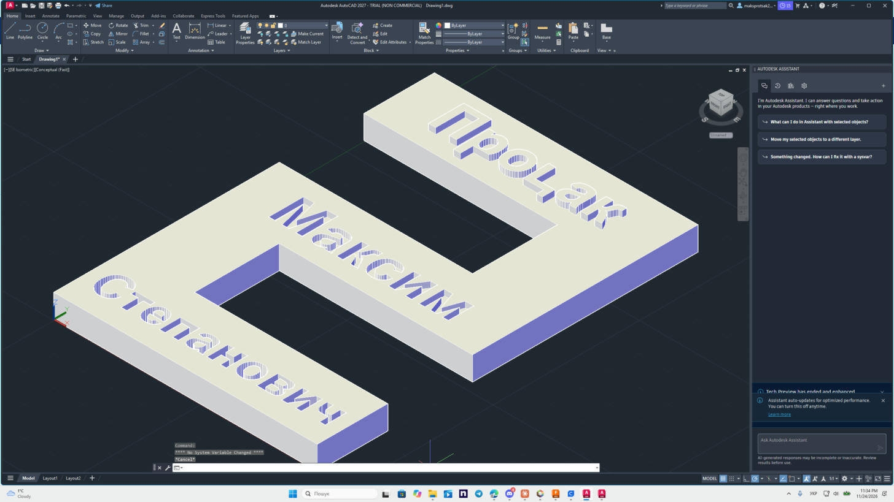
Рис. 1. Фінальна модель у вікні AutoCAD 2027 (SE Isometric, Conceptual)
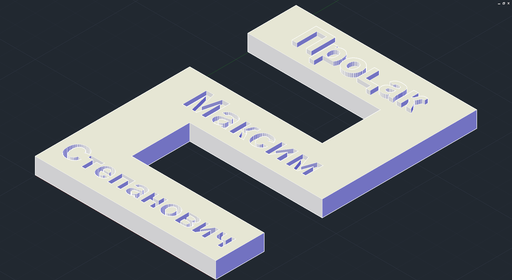
Рис. 2. Модель AutoCAD: опуклий «Процак», увігнутий «Максим», наскрізний «Степанович» (PNGOUT)
Під час першого запуску TXTEXP не прийняв вибір !lab4-ss з повідомленням «Can't reenter LISP»: команда TXTEXP сама написана на AutoLISP, тому вираз LISP під час її роботи не обчислюється. Сценарій виправлено — тексти вибираються опцією _ALL (на кресленні на цьому етапі є лише три тексти). Модель експортовано в digit2_autocad.stl.
;;; ----------------------------------------------------------------------------
;;; lab4_digit2.lsp — ЛР4 АПКС, AutoCAD (2D-орієнтована САПР)
;;; Процак Максим Степанович, КІ-402 -> цифра «2».
;;;
;;; Послідовність (як у методичці):
;;; 1. Тексти ПІБ (TEXT, шрифт Arial Bold) -> TXTEXP (контури) -> REGION
;;; (внутрішні контури букв віднімаються SUBTRACT, щоб отримати букви з отворами).
;;; 2. 2D-контур цифри PLINE -> REGION -> EXTRUDE на товщину T.
;;; 3. Прізвище: EXTRUDE назовні + UNION (опуклий).
;;; Ім'я: EXTRUDE всередину + SUBTRACT (увігнутий).
;;; По батькові: EXTRUDE на глибину > T + SUBTRACT (наскрізний).
;;; 4. Вид SE Isometric, PNGOUT (скріншот) і STLOUT (STL).
;;; Результати: %USERPROFILE%\lab4_out\
;;; Запуск: SCRIPT -> lab4_run.scr (або вручну: (load "...lab4_digit2.lsp") (lab4-texts),
;;; TXTEXP з вибором !lab4-ss, потім (lab4-build)).
;;; Потрібні Express Tools (команда TXTEXP), вони входять у повний AutoCAD.
;;; ----------------------------------------------------------------------------
(vl-load-com)
(setq lab4-W 90.0 lab4-H 130.0 lab4-S 24.0 ; ширина, висота цифри, ширина сегмента, мм
lab4-T 8.0 ; товщина цифри
lab4-RAISE 2.0 lab4-ENGRAVE 2.0) ; опуклий / увігнутий текст
(setq lab4-out (strcat (getenv "USERPROFILE") "\\lab4_out\\"))
(defun lab4-text (str x y h)
;; однорядковий TEXT, вирівнювання по центру (72=1, 73=2)
(entmake (list '(0 . "TEXT") '(100 . "AcDbEntity") '(8 . "0") '(100 . "AcDbText")
(list 10 x y 0.0) (cons 40 h) (cons 1 str) '(7 . "LAB4")
'(72 . 1) (list 11 x y 0.0) '(100 . "AcDbText") '(73 . 2)))
(entlast))
(defun lab4-texts ( / )
(setvar "CMDECHO" 0)
(setvar "OSMODE" 0)
(setvar "DELOBJ" 1)
(vl-mkdir lab4-out)
(command "_.UCS" "_W")
(command "_.-VIEW" "_TOP")
(if (not (tblsearch "STYLE" "LAB4"))
(entmake '((0 . "STYLE") (100 . "AcDbSymbolTableRecord") (100 . "AcDbTextStyleTableRecord")
(2 . "LAB4") (70 . 0) (40 . 0.0) (41 . 1.0) (50 . 0.0) (71 . 0) (42 . 2.5)
(3 . "arialbd.ttf") (4 . ""))))
(setq lab4-ss (ssadd))
;; «Процак» — верхня смуга, «Максим» — середня, «Степанович» — нижня
(ssadd (lab4-text "\\U+041F\\U+0440\\U+043E\\U+0446\\U+0430\\U+043A"
(/ lab4-W 2) (- lab4-H (/ lab4-S 2)) 12.0) lab4-ss)
(ssadd (lab4-text "\\U+041C\\U+0430\\U+043A\\U+0441\\U+0438\\U+043C"
(/ lab4-W 2) (/ lab4-H 2) 12.0) lab4-ss)
(ssadd (lab4-text "\\U+0421\\U+0442\\U+0435\\U+043F\\U+0430\\U+043D\\U+043E\\U+0432\\U+0438\\U+0447"
(/ lab4-W 2) (/ lab4-S 2) 10.0) lab4-ss)
(command "_.ZOOM" "_W" (list -5.0 -5.0) (list (+ lab4-W 5) (+ lab4-H 5)))
(princ "\nТексти створено. Далі: TXTEXP, вибір !lab4-ss")
(princ))
(defun lab4-bbox (e / mn mx)
(vla-getboundingbox (vlax-ename->vla-object e) 'mn 'mx)
(list (vlax-safearray->list mn) (vlax-safearray->list mx)))
(defun lab4-inside (a b) ; bbox a строго всередині bbox b
(and (> (car (car a)) (car (car b))) (> (cadr (car a)) (cadr (car b)))
(< (car (cadr a)) (car (cadr b))) (< (cadr (cadr a)) (cadr (cadr b)))))
(defun lab4-ss->list (ss / i l)
(setq i 0)
(if ss (repeat (sslength ss) (setq l (cons (ssname ss i) l) i (1+ i))))
l)
(defun lab4-after (mark / e l) ; усі об'єкти, створені після mark
(setq e (if mark (entnext mark) (entnext)))
(while e (setq l (cons e l) e (entnext e)))
l)
(defun lab4-extrude (lst h / mark) ; EXTRUDE списку регіонів -> список тіл
(setq mark (entlast))
(command "_.EXTRUDE" (lab4-list->ss lst) "" h)
(lab4-after mark))
(defun lab4-list->ss (l / ss)
(setq ss (ssadd))
(foreach e l (ssadd e ss))
ss)
(defun lab4-build ( / plines regs boxes holes outer r b cy top mid bot base pts)
(setvar "CMDECHO" 0)
;; 1. контури тексту -> регіони
(setq plines (ssget "_X" '((0 . "LWPOLYLINE,POLYLINE,LINE,ARC,SPLINE"))))
(command "_.REGION" plines "")
(setq regs (lab4-ss->list (ssget "_X" '((0 . "REGION")))))
(setq boxes (mapcar 'lab4-bbox regs))
;; внутрішні контури букв (о, а, р, е, в ...) віднімаються від зовнішніх
(foreach r regs
(setq b (lab4-bbox r) outer nil)
(foreach r2 regs
(if (and (not (eq r r2)) (lab4-inside b (lab4-bbox r2))) (setq outer r2)))
(if outer (setq holes (cons (cons outer r) holes))))
(foreach h holes (command "_.SUBTRACT" (car h) "" (cdr h) ""))
(setq regs (lab4-ss->list (ssget "_X" '((0 . "REGION")))))
;; розподіл букв за смугами за координатою Y центру
(foreach r regs
(setq b (lab4-bbox r) cy (/ (+ (cadr (car b)) (cadr (cadr b))) 2))
(cond ((> cy (- lab4-H lab4-S)) (setq top (cons r top)))
((> cy lab4-S) (setq mid (cons r mid)))
(t (setq bot (cons r bot)))))
;; прізвище: на верхню грань і назовні
(command "_.MOVE" (lab4-list->ss top) "" '(0 0 0) (list 0 0 lab4-T))
(setq top (lab4-extrude top lab4-RAISE))
;; ім'я: з верхньої грані всередину
(command "_.MOVE" (lab4-list->ss mid) "" '(0 0 0) (list 0 0 lab4-T))
(setq mid (lab4-extrude mid (- lab4-ENGRAVE)))
;; по батькові: з-під низу на глибину, більшу за товщину
(command "_.MOVE" (lab4-list->ss bot) "" '(0 0 0) '(0 0 -1))
(setq bot (lab4-extrude bot (+ lab4-T 2)))
;; 2. контур цифри «2» -> REGION -> EXTRUDE
(setq pts (list (list 0 0) (list lab4-W 0) (list lab4-W lab4-S) (list lab4-S lab4-S)
(list lab4-S (- (/ lab4-H 2) (/ lab4-S 2))) (list lab4-W (- (/ lab4-H 2) (/ lab4-S 2)))
(list lab4-W lab4-H) (list 0 lab4-H) (list 0 (- lab4-H lab4-S))
(list (- lab4-W lab4-S) (- lab4-H lab4-S)) (list (- lab4-W lab4-S) (+ (/ lab4-H 2) (/ lab4-S 2)))
(list 0 (+ (/ lab4-H 2) (/ lab4-S 2)))))
(command "_.PLINE")
(foreach p pts (command p))
(command "_C")
(command "_.REGION" (entlast) "")
(command "_.EXTRUDE" (entlast) "" lab4-T)
(setq base (entlast))
;; 3. булеві операції
(command "_.UNION" base (lab4-list->ss top) "")
(command "_.SUBTRACT" base "" (lab4-list->ss (append mid bot)) "")
;; 4. вид, скріншот, STL
(command "_.-VIEW" "_SEISO")
(command "_.VSCURRENT" "_C")
(command "_.ZOOM" "_E")
(setvar "FILEDIA" 0)
(if (findfile (strcat lab4-out "autocad_iso.png")) (vl-file-delete (strcat lab4-out "autocad_iso.png")))
(command "_.PNGOUT" (strcat lab4-out "autocad_iso.png") "")
(if (findfile (strcat lab4-out "digit2_autocad.stl")) (vl-file-delete (strcat lab4-out "digit2_autocad.stl")))
(command "_.STLOUT" (ssget "_X" '((0 . "3DSOLID"))) "" "_Y" (strcat lab4-out "digit2_autocad.stl"))
(setvar "FILEDIA" 1)
(princ (strcat "\nГотово. Результати в " lab4-out))
(princ))
(princ "\nlab4_digit2.lsp завантажено.")
(princ)
| Крок | Операція | Дія |
|---|---|---|
| 1 | New Component | компонент Digit_2 |
| 2 | Sketch (XY) → Extrude, New Body | контур «2» з ліній, видавлювання на 8 мм |
| 3 | Sketch on face → Text | ескіз на верхній грані, три тексти (Arial, Bold) у межах смуг |
| 4 | Extrude Join +2 мм | опуклий текст «Процак» |
| 5 | Extrude Cut 2 мм | увігнутий текст «Максим» |
| 6 | Extrude Cut 10 мм | наскрізний текст «Степанович» (глибина більша за товщину) |
| 7 | Save as STL | експорт тіла, сітка High |
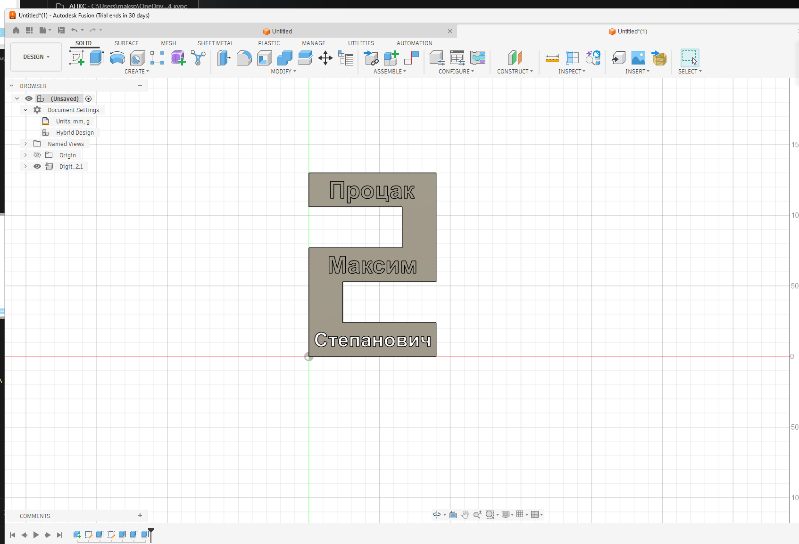
Рис. 3. Fusion 360: модель і хронологія операцій (Timeline) внизу вікна
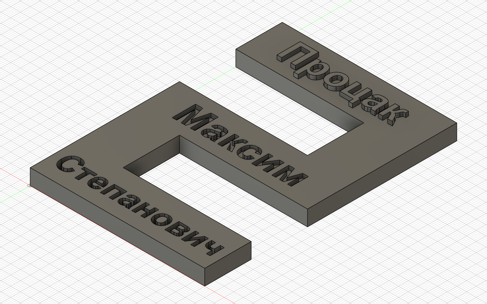
Рис. 4. Фінальна модель Fusion 360: опуклий, увігнутий і наскрізний текст
Наскрізний виріз відділяє внутрішні «острівці» букв із замкненими контурами (о, а, е, в у слові «Степанович») в окремі тіла — як у трафареті. Для друку експортується основне тіло цифри.
"""
ЛР4 АПКС — Fusion 360 (твердотільне параметричне моделювання).
Процак Максим Степанович, КІ-402 -> цифра «2».
Скрипт будує модель і зберігає результати в теку Лаб4:
1. Новий компонент Digit_2, ескіз контуру цифри «2» на площині XY.
2. Extrude (New Body) на товщину T -> базове тіло.
3. Ескіз на верхній грані цифри, три тексти:
«Процак» -> Extrude Join +RAISE мм (опуклий)
«Максим» -> Extrude Cut -ENGRAVE мм (увігнутий)
«Степанович» -> Extrude Cut through all (наскрізний)
4. Експорт STL (тіло цифри) і скріншоти видового екрана.
Запуск: Utilities -> Add-Ins -> Scripts and Add-Ins -> «+» (Script from my computer) ->
вибрати теку Lab4Digit2 -> Run.
"""
import os
import traceback
import adsk.core
import adsk.fusion
# ---------------------------------------------------------------- параметри (мм)
W, H, S = 90.0, 130.0, 24.0 # ширина, висота цифри, ширина «сегмента»
T = 8.0 # товщина цифри
RAISE, ENGRAVE = 2.0, 2.0 # висота опуклого / глибина увігнутого тексту
TEXT_H = {"top": 12.0, "mid": 12.0, "bot": 10.0}
FONT = "Arial"
OUT_DIR = os.path.abspath(os.path.join(os.path.dirname(os.path.abspath(__file__)), "..", ".."))
STL_DIR = os.path.join(OUT_DIR, "stl")
IMG_DIR = os.path.join(OUT_DIR, "img")
def cm(v): # API Fusion працює в сантиметрах
return v / 10.0
def P(x, y, z=0.0):
return adsk.core.Point3D.create(cm(x), cm(y), cm(z))
def digit2_outline():
"""Контур «2» (семисегментний стиль): верхня, середня, нижня смуги,
правий верхній і лівий нижній сегменти. Проти годинникової стрілки."""
m0, m1 = H / 2 - S / 2, H / 2 + S / 2
return [(0, 0), (W, 0), (W, S), (S, S), (S, m0), (W, m0), (W, H),
(0, H), (0, H - S), (W - S, H - S), (W - S, m1), (0, m1)]
def run(context):
ui = None
try:
app = adsk.core.Application.get()
ui = app.userInterface
os.makedirs(STL_DIR, exist_ok=True)
os.makedirs(IMG_DIR, exist_ok=True)
doc = app.documents.add(adsk.core.DocumentTypes.FusionDesignDocumentType)
design = adsk.fusion.Design.cast(app.activeProduct)
design.designType = adsk.fusion.DesignTypes.ParametricDesignType
root = design.rootComponent
# 1. новий компонент
occ = root.occurrences.addNewComponent(adsk.core.Matrix3D.create())
comp = occ.component
comp.name = "Digit_2"
# 2. ескіз контуру і базове тіло
sk = comp.sketches.add(comp.xYConstructionPlane)
sk.name = "Digit2_outline"
pts = digit2_outline()
lines = sk.sketchCurves.sketchLines
for (x1, y1), (x2, y2) in zip(pts, pts[1:] + pts[:1]):
lines.addByTwoPoints(P(x1, y1), P(x2, y2))
prof = sk.profiles.item(0)
ext = comp.features.extrudeFeatures
ei = ext.createInput(prof, adsk.fusion.FeatureOperations.NewBodyFeatureOperation)
ei.setDistanceExtent(False, adsk.core.ValueInput.createByString(f"{T} mm"))
base = ext.add(ei)
base.name = "Extrude_Digit"
body = base.bodies.item(0)
body.name = "Digit2"
top_face = base.endFaces.item(0)
# 3. тексти на верхній грані
sk2 = comp.sketches.add(top_face)
sk2.name = "Texts_FIO"
def add_text(s, cx, cy, h, box_w):
ti = sk2.sketchTexts.createInput2(s, cm(h))
c1 = sk2.modelToSketchSpace(P(cx - box_w / 2, cy - S / 2 + 1, T))
c2 = sk2.modelToSketchSpace(P(cx + box_w / 2, cy + S / 2 - 1, T))
ti.setAsMultiLine(c1, c2,
adsk.core.HorizontalAlignments.CenterHorizontalAlignment,
adsk.core.VerticalAlignments.MiddleVerticalAlignment, 0)
ti.fontName = FONT
ti.textStyle = adsk.fusion.TextStyles.TextStyleBold
return sk2.sketchTexts.add(ti)
t_last = add_text("Процак", W / 2, H - S / 2, TEXT_H["top"], W - 6)
t_first = add_text("Максим", W / 2, H / 2, TEXT_H["mid"], W - 6)
t_middle = add_text("Степанович", W / 2, S / 2, TEXT_H["bot"], W - 6)
neg = adsk.fusion.ExtentDirections.NegativeExtentDirection
# опуклий: Join назовні
ji = ext.createInput(t_last, adsk.fusion.FeatureOperations.JoinFeatureOperation)
ji.setDistanceExtent(False, adsk.core.ValueInput.createByString(f"{RAISE} mm"))
ji.participantBodies = [body]
ext.add(ji).name = "Join_Surname"
# увігнутий: Cut всередину на ENGRAVE
ci = ext.createInput(t_first, adsk.fusion.FeatureOperations.CutFeatureOperation)
ci.setOneSideExtent(adsk.fusion.DistanceExtentDefinition.create(
adsk.core.ValueInput.createByString(f"{ENGRAVE} mm")), neg)
ci.participantBodies = [body]
ext.add(ci).name = "Cut_Name"
# наскрізний: Cut на глибину, більшу за товщину
ti = ext.createInput(t_middle, adsk.fusion.FeatureOperations.CutFeatureOperation)
ti.setOneSideExtent(adsk.fusion.DistanceExtentDefinition.create(
adsk.core.ValueInput.createByString(f"{T + 2} mm")), neg)
ti.participantBodies = [body]
ext.add(ti).name = "ThruCut_Patronymic"
# Наскрізний виріз відділяє «острівці» всередині букв (о, а, е, в) в окремі тіла.
bodies = [comp.bRepBodies.item(i) for i in range(comp.bRepBodies.count)]
main = max(bodies, key=lambda b: b.volume)
main.name = "Digit2"
for b in bodies:
if b != main:
b.name = "Island_" + b.name
# 4. експорт STL (основне тіло) і скріншоти
em = design.exportManager
so = em.createSTLExportOptions(main, os.path.join(STL_DIR, "digit2_fusion.stl"))
so.meshRefinement = adsk.fusion.MeshRefinementSettings.MeshRefinementHigh
so.isBinaryFormat = True
em.execute(so)
vp = app.activeViewport
for name, orient in (("fusion_iso", adsk.core.ViewOrientations.IsoTopRightViewOrientation),
("fusion_top", adsk.core.ViewOrientations.TopViewOrientation)):
cam = vp.camera
cam.viewOrientation = orient
cam.isFitView = True
vp.camera = cam
vp.refresh()
adsk.doEvents()
vp.saveAsImageFile(os.path.join(IMG_DIR, name + ".png"), 1600, 1000)
ui.messageBox(
"Модель «2» побудовано.\n\n"
f"Тіл у компоненті: {len(bodies)} (основне + острівці букв наскрізного тексту)\n"
f"Об'єм основного тіла: {main.volume * 1000:.0f} мм³\n\n"
f"STL: {os.path.join(STL_DIR, 'digit2_fusion.stl')}\n"
f"Скріншоти: {IMG_DIR}")
except Exception:
if ui:
ui.messageBox("Помилка:\n{}".format(traceback.format_exc()))
| Критерій | AutoCAD (2D-екструзія) | Fusion 360 (параметричне моделювання) |
|---|---|---|
| Текст як профіль | текст не є замкненим контуром — потрібні TXTEXP (Express Tools), REGION і ручне віднімання внутрішніх контурів букв | текст ескізу одразу є профілем для Extrude |
| Булеві операції | окремі команди UNION / SUBTRACT після кожного EXTRUDE | вбудовані в Extrude: Join / Cut / New Body |
| Історія та зміни | немає дерева побудови: щоб змінити товщину чи текст, тіло треба будувати заново | Timeline: зміна параметра (товщина, глибина, текст) перераховує модель |
| Прив'язка до граней | робота в UCS, ручне переміщення (MOVE) профілів на рівень грані | ескіз створюється безпосередньо на грані тіла |
| Експорт STL | STLOUT (лише 3D-тіла) | Save as STL з налаштуванням якості сітки |
| Сильні сторони | точне 2D-креслення, звична командна робота, креслярська документація | твердотільне моделювання, швидкі ітерації, підготовка до виробництва |
Для цієї задачі зручнішим є Fusion 360: модель описується меншою кількістю операцій (5 проти ~12 команд), текст не потребує перетворення на контури, тип операції (Join/Cut) задається одразу під час видавлювання, а параметричне дерево дозволяє змінити будь-який розмір без перебудови. AutoCAD орієнтований насамперед на 2D-креслення: 3D-тіло отримується екструзією окремих областей з подальшими булевими операціями, що придатно для простих призматичних деталей, але трудомістко для тексту з внутрішніми контурами.
| Параметр | Значення |
|---|---|
| Принтер / сопло / матеріал | Creality Ender-3, 0.4 мм, Generic PLA (1.75 мм) |
| Модель | digit2_fusion.stl (Fusion 360), 90 × 130 × 10 мм, лежить на столі тильною стороною |
| Висота шару (Layer Height) | 0.2 мм |
| Заповнення (Infill Density) | 20 %, візерунок Cubic |
| Підтримки (Support) | вимкнено — у моделі немає навислих частин: опуклий текст стоїть на верхній грані, вирізи відкриті догори |
| Адгезія (Build Plate Adhesion) | Brim (обрис) |
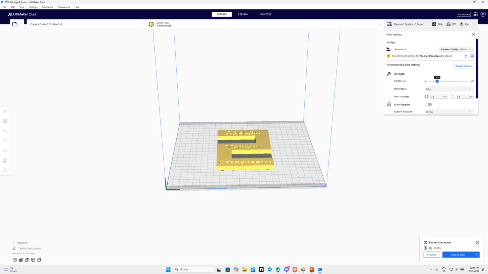
Рис. 5. Вікно Cura: модель на столі Creality Ender-3, профіль Standard Quality 0.2 мм, підсумок нарізки
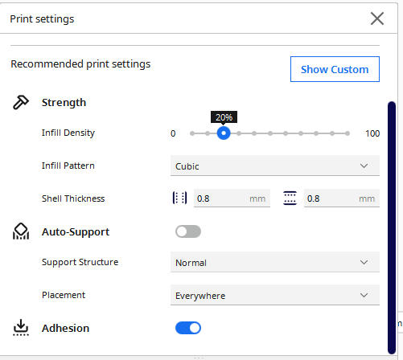
Рис. 6. Cura: заповнення 20 % (Cubic), Auto-Support вимкнено, Adhesion увімкнено
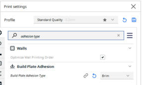
Рис. 7. Cura (Custom): Build Plate Adhesion Type = Brim
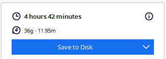
Рис. 8. Підсумок нарізки: час друку і витрата матеріалу
| Показник | Значення |
|---|---|
| Час друку | 4 год 42 хв (16949 с) |
| Матеріал | ≈ 36 г PLA, 11.95 м філаменту |
| Кількість шарів | 50 |
| G-code | Marlin, digit2_fusion.gcode |
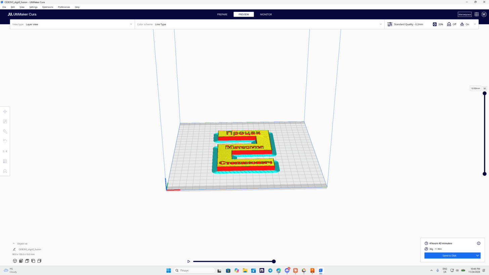
Рис. 9. Preview (Layer view): уся модель, блакитним — Brim
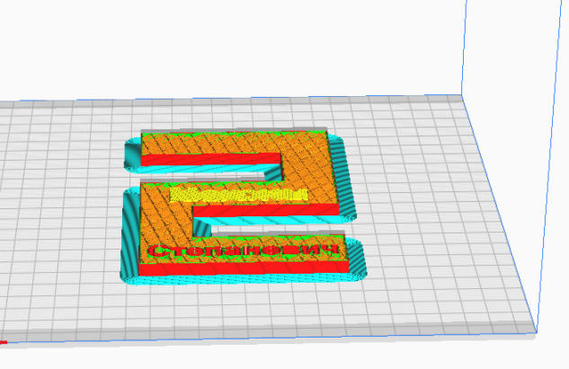
Рис. 10. Шар ≈ 20 (z ≈ 4 мм): заповнення Cubic (помаранчеве), стінки навколо наскрізних букв
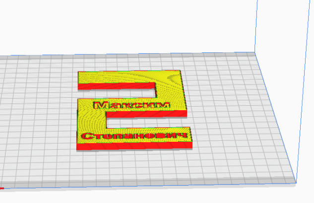
Рис. 11. Шар 38 (z = 7.6 мм): верхня обшивка; увігнуте ім'я і наскрізне по батькові — порожнини
| Шари | Висота z | Що друкується |
|---|---|---|
| 1 | 0–0.2 мм | перший шар цифри і Brim навколо контуру |
| 1–30 | 0–6 мм | тіло цифри: стінки, нижня обшивка, заповнення 20 %; букви «Степанович» — отвори з власними стінками (наскрізний контур) |
| 31–40 | 6–8 мм | верхня обшивка цифри; з'являються порожнини букв «Максим» (увігнутий контур, під ними слайсер друкує суцільне «дно»); «Степанович» лишається отвором |
| 41–50 | 8–10 мм | лише букви «Процак» (опуклий контур): стінки і суцільне заповнення тонких елементів |
Отже, слайсер обробляє опуклий контур як окремі «острівці» над верхньою гранню, увігнутий — як порожнину з суцільним дном у верхніх шарах, а наскрізний — як отвір, що проходить через усі шари тіла й обрамлений стінками.
У роботі побудовано 3D-модель цифри «2» (група КІ-402) з прізвищем, ім'ям і по батькові трьома типами контурів — опуклим (Join/UNION), увігнутим і наскрізним (Cut/SUBTRACT) — у двох САПР: AutoCAD (екструзія 2D-областей з булевими операціями) і Fusion 360 (твердотільне параметричне моделювання). Fusion 360 виявився зручнішим для задачі завдяки тексту-профілю, вбудованим булевим операціям і хронології побудови. Модель підготовлено до друку в UltiMaker Cura з параметрами шар 0.2 мм, заповнення 20 %, Brim, без підтримок: орієнтовний час друку — 4 год 42 хв, витрата матеріалу — близько 36 г PLA (11.95 м). Засвоєно навички 3D-моделювання, експорту STL, налаштування слайсера та аналізу G-code.